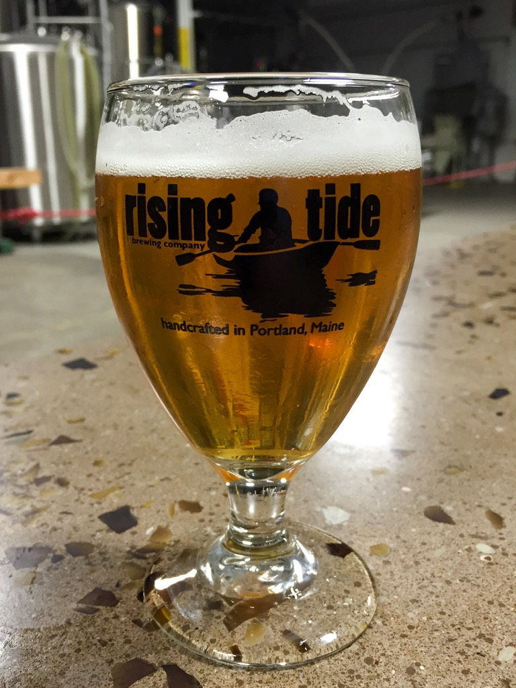

Food & Drink
Food
Flatbread Pizza


Rating: 4.5/5
Flatbread Pizza is located on the waterfront of Portland right next to the fairy terminal. The restaurant is well known for their flat pizzas that are wood-fired. By featuring local farms and producers, the restaurant's menu features daily specials of the msot in season restaurants and customizable pizzas. Their desserts and salads almost steal the show
Recommendation: Jay's Heart with an Organic Salad with goat cheese and a brownie sundae.
Duckfat
Rating: 4.75/5
Duckfat is located between the East End and the Old Port. It is well known for its paninis, Belgian fries, and milkshakes. While it is a small restaurant, the food is well worth the wait for a table (or feel free to grab take-out). The atmosphere is a perfect combination of gourmet and casual. While there aren't many vegetarian options, the restaurant is accommdating with their paninis.
Recommendation: Large Fries with truffle ketchup and garlic mayo with a B.G.T. panini and a Sea Salt Duck Fat Caramel shake.
Benkay Japanese Restaurant & Sushi Bar

Rating: 4.25/5
Benkay is located between the East End and the Old Port. It sits next to Shipyard Brewing Co. The restaurant is well known for its delicious sushi. There are over 30 different types of sushi types available and new specials everyday. There is also vegetarian options for those you don't like to eat fish.
Blake Orchard

Rating: 4/5
Blake Orchard Juicery is a local cold-pressed juice and smoothie shop located in the middle of the Old Port. The small juice bar is great for a refreshing, healthy snack in the midst of walking around the Old Port.
Drink
Shipyard Brewing Company

Rating: 4.5/5
Shipyard Brewery is right outside the Old Port. As one of the largest microbreweries in New England, Shipyard is a destination spot in Portland. It features a tasting room and store with a variety of beers and soft drinks. The tasting room has outdoor and indoor seating available for reservation.
Rising Tide Brewing
Rating: 4.75/5
Rising Tide Brewery is located on the bayside of Portland. The place features a large indoor and outdoor seating area and often hosts food trucks and live music. It can also be booked for private events. The brewery features a large variety of of different beers.
Allagash Brewing Company

Rating: 4/5
Allagash Brewing Company is located a little ways outside downtown Portland. Known for their Belgian style beer, the brewing company offers tours, tastings, and often hosts food trucks. They are known as one of the largest craft breweries in the United States.